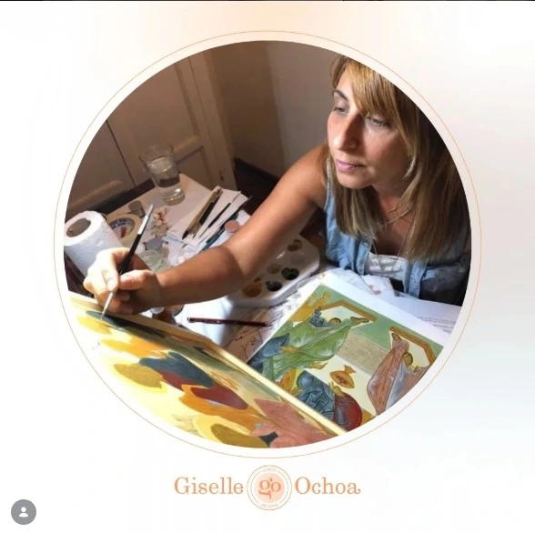
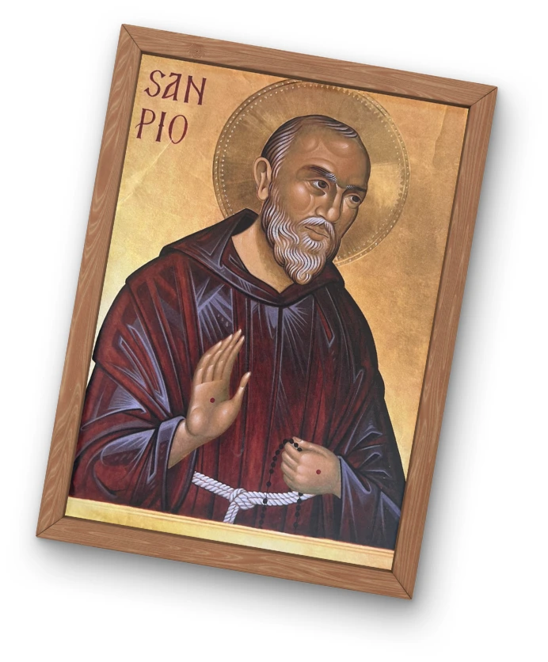

Mi nombre es Giselle Ochoa y soy iconógrafa. Mi viaje en el mundo de la iconografía bizantina comenzó en 2015, cuando me uní a un taller en la iglesia de San Benito. Fue allí donde di mis primeros pasos en este fascinante arte, pero mi deseo de profundizar en la tradición me llevó a buscar más conocimiento.
A lo largo de los años, tuve el privilegio de conocer a Natalia en su taller de Santa Sofía, donde perfeccioné mis habilidades y profundicé mi comprensión de las raíces de la iconografía bizantina. Su enseñanza me proporcionó una perspectiva más profunda y enriquecedora de este arte sagrado.
En 2020, decidí emprender un viaje personal hacia el autoconocimiento y la exploración del arte sacro. Viajé por España en busca de más sabiduría y experiencias que me permitieran seguir creciendo tanto personal como profesionalmente.
Estoy emocionada de compartir con ustedes todo lo que he aprendido y de explorar juntos el hermoso mundo de la iconografía bizantina. Espero que disfruten y aprovechen al máximo esta experiencia. ¡Estoy aquí para ayudarles en todo lo que pueda!

La iconografía bizantina es una expresión artística sagrada que trasciende lo meramente visual para convertirse en una ventana hacia lo divino. Basada en una tradición espiritual profunda, sus imágenes no buscan representar la realidad de forma naturalista, sino transmitir la esencia y la presencia de lo sagrado.
A través de colores simbólicos, composiciones jerárquicas y técnicas ancestrales como el temple al huevo, los iconos bizantinos narran historias bíblicas, vidas de santos y la presencia de Cristo en el mundo. Cada trazo y cada pigmento contienen un significado teológico, convirtiendo al icono en una herramienta de oración y contemplación.
Se desarrollo más que una obra de arte, el icono es un puente entre el cielo y la tierra, una invitación a la meditación y una manifestación de la luz divina